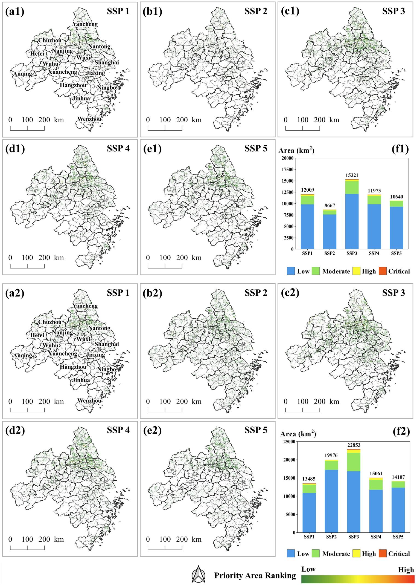
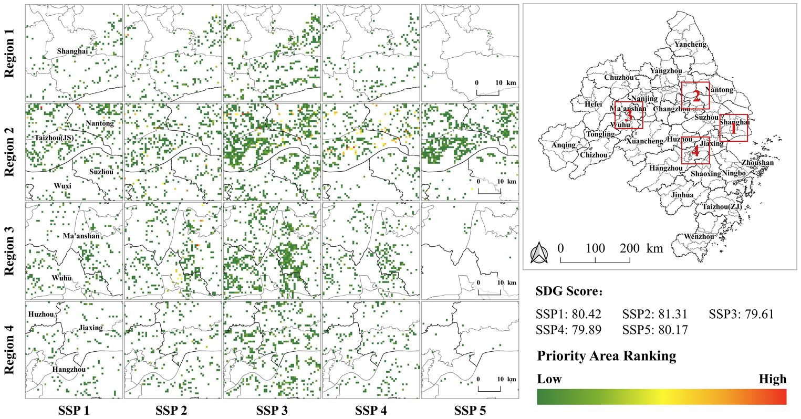

03 · Case Study
>15,000
SSP3 · km² (largest)
8,667
SSP2 · km² (smallest)
Nearly 20% overlap across multiple SDGs.
22,853
SSP3 · km² (still largest)
+130%
SSP2 · fastest growth
Expands under all scenarios except SSP1.
Clustered in southern Jiangsu, northern Zhejiang, eastern Anhui.

